campaign更新情報
ツール一覧
カードにマウスを当てる（スマホは「説明」を押す）と、画面の例と説明が出ます。
よく開かれたツール
こんなことばで探せます
利用シーン
ツール
このシーンのツールはまだありません
「すべて」に戻すと、ほかのツールを見られます。
こんなことばでも探せます
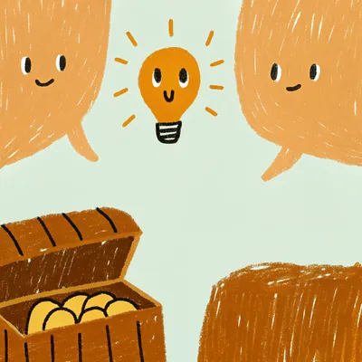
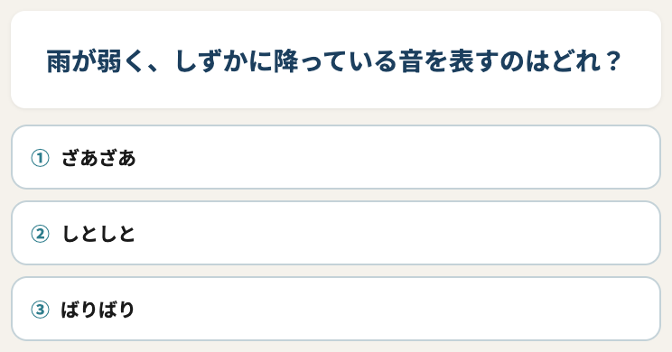
コトバのテーマクイズ
その日のことばのテーマを3択で知る
その日のゲームで使う「コトバのテーマ」を、3択ミニクイズ4問で先に紹介するツール。最後のまとめ画面から、そのテーマを使うゲームへそのまま進める。
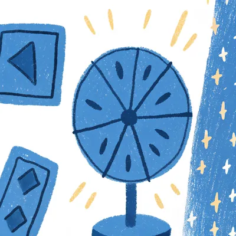
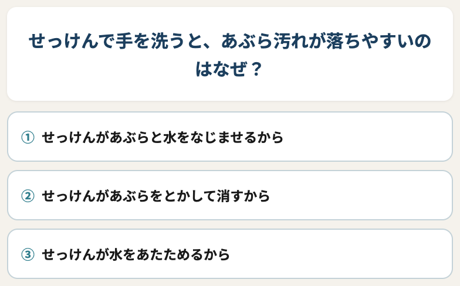
クイズパック
3択・2択のクイズをテンポよく
雑学3択クイズと連続2択クイズをまとめて進行できる画面共有向けツール。ことばクイズや全部シャッフルにも対応。ルームを作れば、各自の端末で答えて早さと正解を競うこともできる。
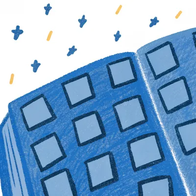
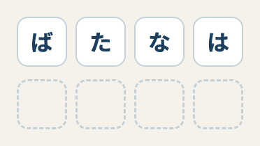
ことばシャッフル
バラバラの文字を並べてことばに
バラバラの文字をならべかえて、ことばを当てる脳トレゲーム。4段階のレベルで楽しめる。
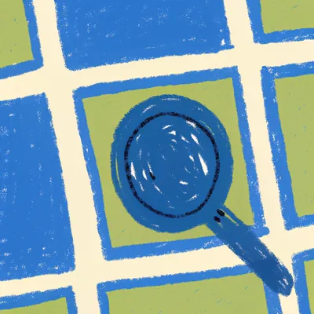
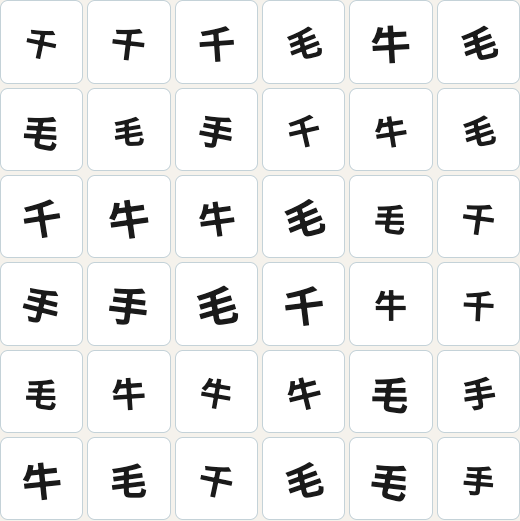
漢字さがし
似た漢字の中からお題の字をさがす
似ている漢字の中からお題の漢字を探す観察力ゲーム。3つの難易度で楽しめる。
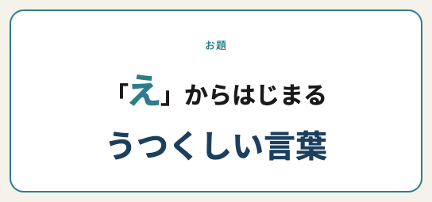
ことばみっけ
頭文字とお題に合うことばを出し合う
「『あ』からはじまる、やさしい言葉」のように、頭文字とお題に合うことばを、みんなでチャットに出し合う言葉あそび。ゲームマスターはお題を出してチャットにコピーするだけ。
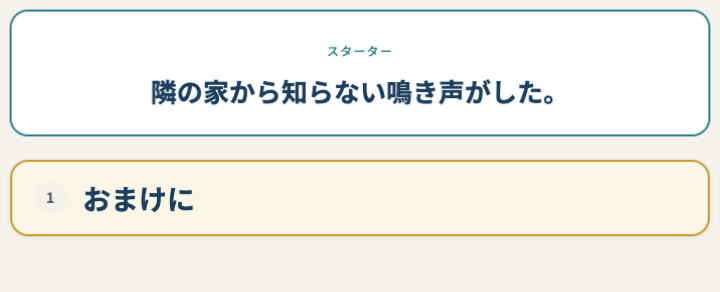
ことばリレー
つなぎ言葉のカードで話をつなぐ
「だから」「でも」「ちなみに」…つなぎ言葉カードを引いて話を転がす多人数向けトークゲーム。
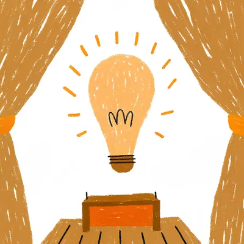
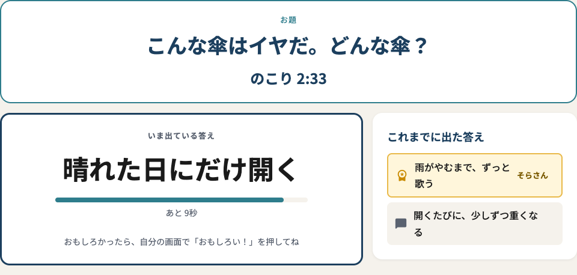
ひらめき大喜利
思いついた答えで「一本！」をねらう
お題に、思いついた答えを何回でも出す大喜利。答えは1つずつ名前を伏せて出て、投票する人の何割かが「いいね！」を押したら「一本！」。順位はつけない。答えずに投票だけでも参加できる。
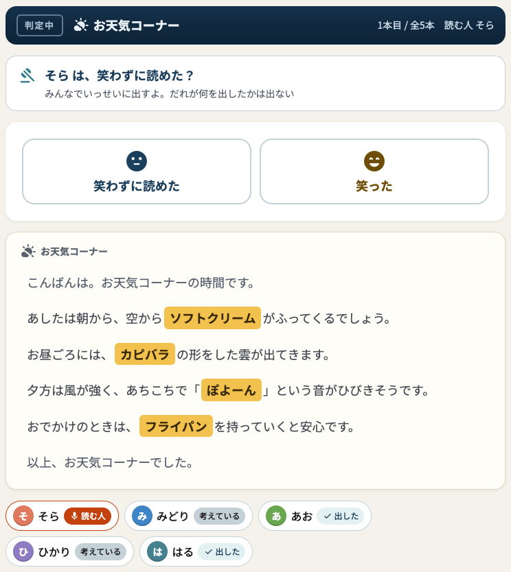
カンペ放送局
空らんに入った言葉を笑わずに読む
読む人の原稿の空らんに、ほかの人が「食べ物」「音」などのヒントだけを見て言葉を書く。読む人は出てきた言葉を笑わずに読みきれるか、読み終わったらみんなで判定する。マイクを使わない人は書くだけで参加できる。
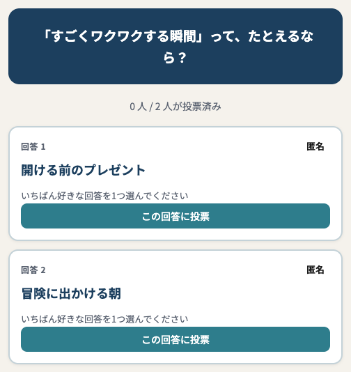
たとえグランプリ
お題をたとえで表して投票し合う
お題をたとえで表現して、お気に入りに匿名投票する大喜利ゲーム。比喩や語彙を遊びながら使える。
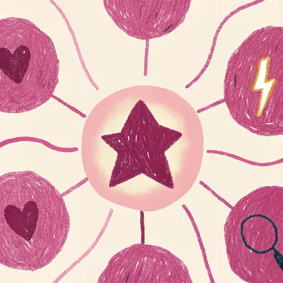
よさマップ
自分のよさと、それが出る場面を選ぶ
「やさしい」「行動力がある」などのよさを選び、それが出る場面も選ぶと、自分のマップが広がるよ。できたマップを見せあったり、みんなで1人のマップを作ったりできる。

好きなものマップ
選んで作る「好き」の地図を見せあう
動物・ゲーム・食べものなどから好きなジャンルを選び、その中の好きなものも選ぶと、自分のマップが広がるよ。できたマップを1人ずつ見せあって話そう。
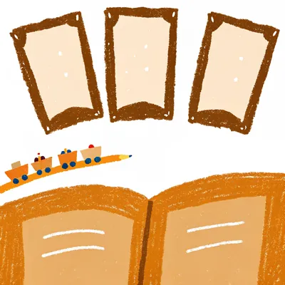
つなげてストーリー
みんなの言葉をつないで文を作る
お題にそって「いつ」「どこで」「だれが」「何をした」を1人ずつ書いて、つなげて読むよ。できた文に続きを足して、お話にしよう。
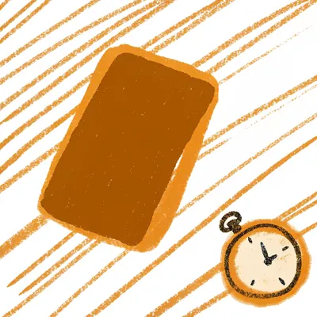
ことばダッシュ！
一瞬で走りぬける言葉を当てる
言葉が1つ、画面をサッと走りぬける。なんて書いてあったかを入力して当てよう。逆走・にせもの入りなどの問題もまざる。
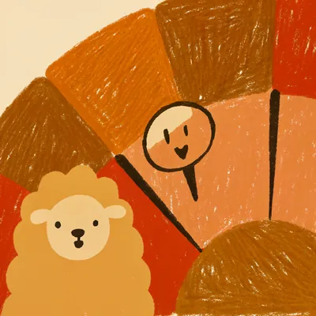
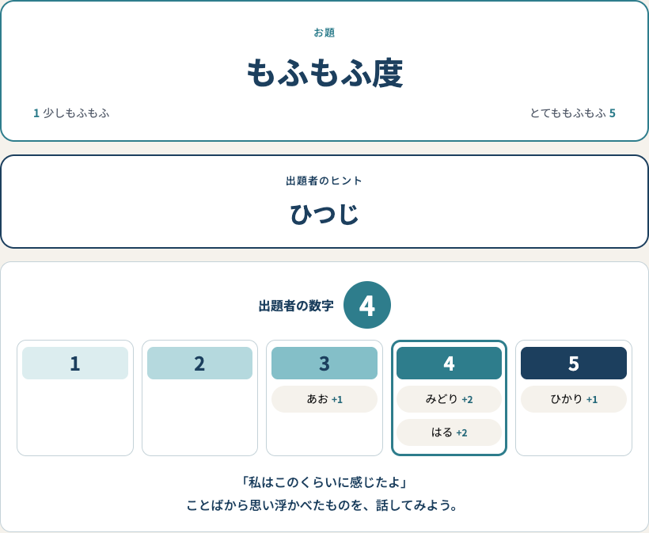
ことばメーター
ヒントから1〜5の数字を予想する
ヒントのことばから、出題者が思い浮かべた1〜5の数字を予想。一斉に公開して、みんなの感じ方の違いを楽しむ。
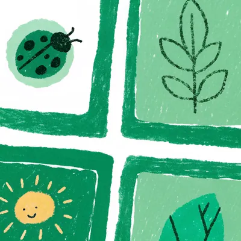
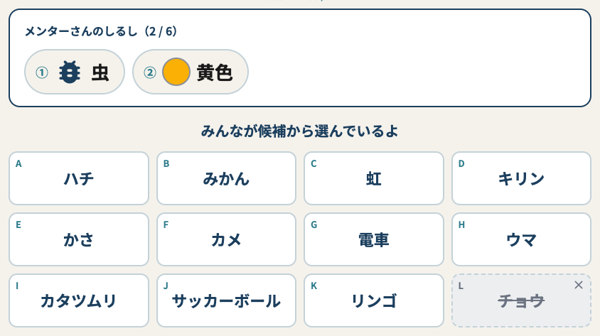
しるしでヒント
アイコンのしるしからお題を当てる
伝える人がアイコンを1つずつ出してお題を伝え、ほかの人は12個の候補から当てる。少ないしるしで当てるほど、当てた人にも伝えた人にも点が入る。はずれると1点減る。
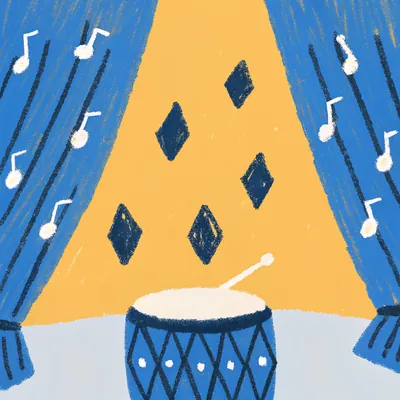
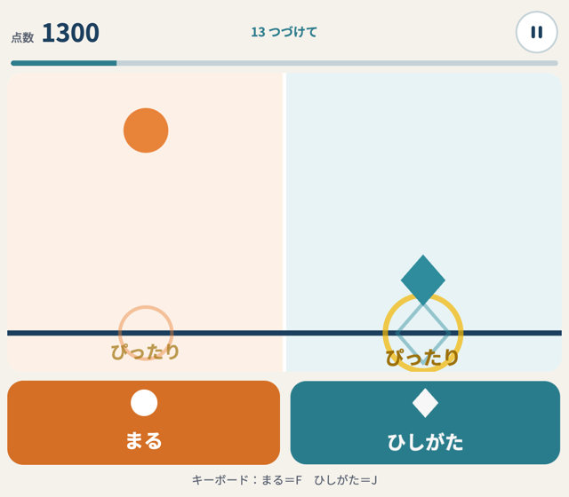
ぴったりビート
落ちてくるしるしをリズムよくたたく
上から落ちてくるしるしが線に来たら、ボタンをたたくリズムあそび。曲はオリジナルの3曲。ルームを作ると、それぞれの端末で遊んだいちばんよい点数でランキングができる。ひとりでも遊べる。
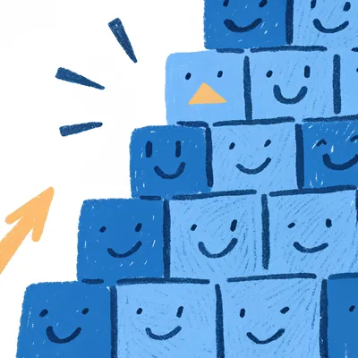
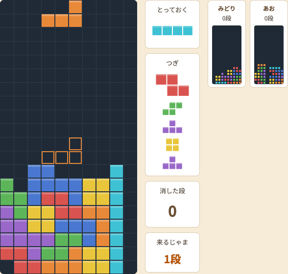
すとんブロック
ブロックを回して横1段をそろえる
上から落ちてくるブロックを回してすき間に入れ、横1段をそろえて消す。ルームではみんな同じ順番でブロックが出て、時間内に消した段の数をくらべる。じゃまブロックを送りあう設定もある。ひとりでも遊べる。
いろつなぎ
同じ色の玉を4つつなげて消す
上から2つ1組で落ちてくる玉を回して置き、同じ色を4つ以上つなげて消す。消えたあとに落ちた玉がまたつながると「れんさ」。色ごとに中の形がちがうので、形でも見分けられる。ひとりで遊ぶツール。
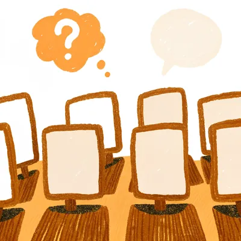
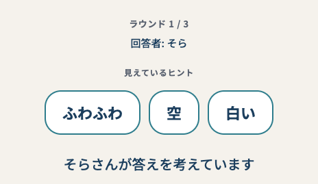
かぶらずヒント
かぶらないヒントでお題を当ててもらう
みんなでヒントを出してお題を当てよう！ただし被ったヒントは消えてしまう協力型ワードゲーム。
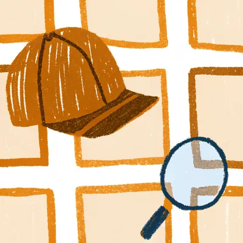
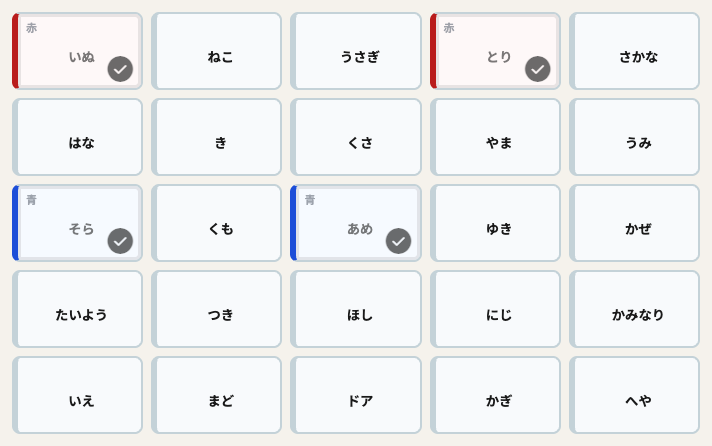
ことば探偵
ヒントのことばからチームのカードを探す
ヒント役の言葉から、自分のチームのカードを見つけ出す連想型チームゲーム。相談しながら推理しよう。
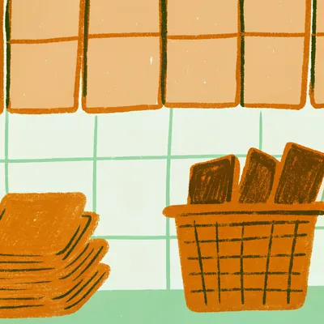
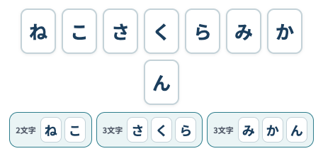
もじそろえゲーム
文字タイルを集めて3つの言葉にそろえる
山か捨て札（新しい順に3枚まで）から文字タイルを1枚取って1枚捨てる、を順番にくり返し、手もとの8枚を「2文字・3文字・3文字」の3つの言葉にそろえたら「あがり」。言葉になっているかはみんなで確かめる。
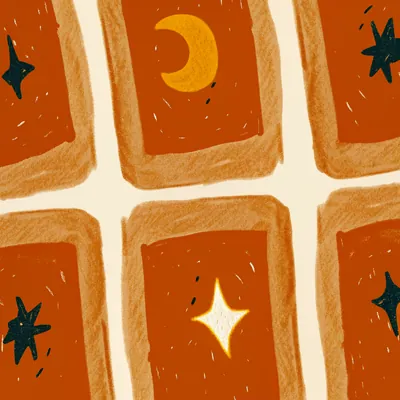
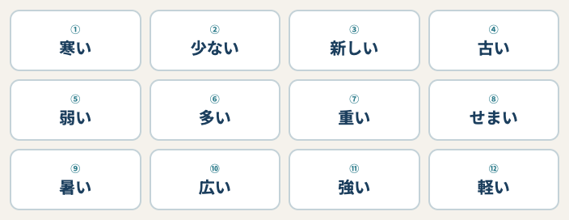
コトバペア
意味でつながる2枚をめくってそろえる
裏向きのことばカードをめくって、意味でつながる2枚を探す神経衰弱式の協力ゲーム。そろえたら同じ人がもう一回。相談しながらでOK。全カード表向きの相談向けモードも選べる。
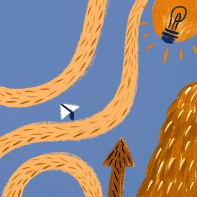
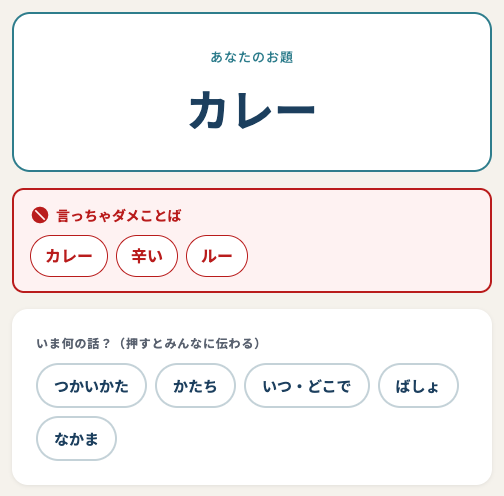
とおまわしクイズ
言っちゃダメことばを避けてお題を説明
お題のことばを「言っちゃダメことば」を使わずに説明して、みんなに当ててもらう協力ゲーム。観点チップと答えの候補から選んで答えることもできる。
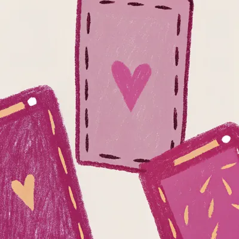
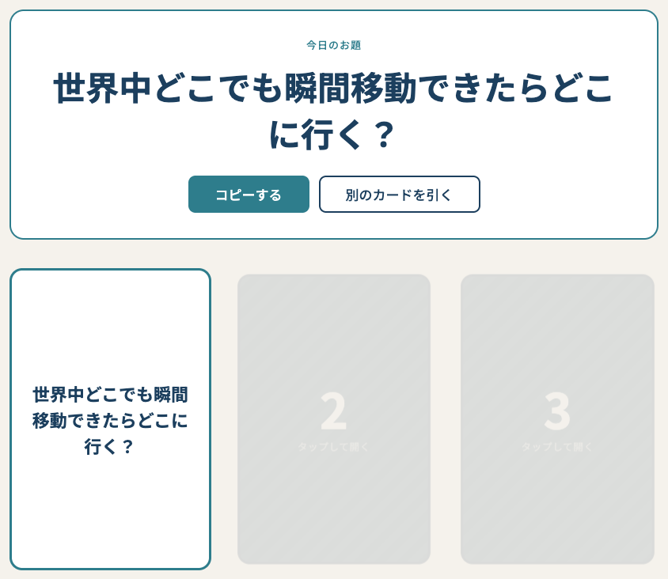
トークテーマカード
カードをめくってトークテーマを引く
カードをめくってトークテーマを引くアイスブレイクツール。セッション開始時や話題に詰まったときに。
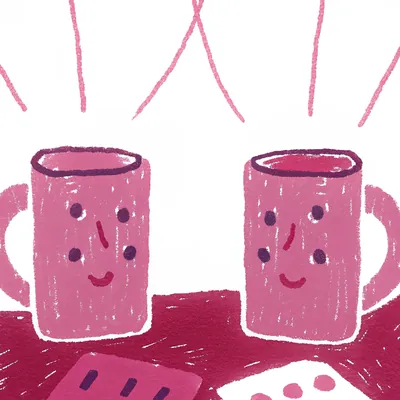
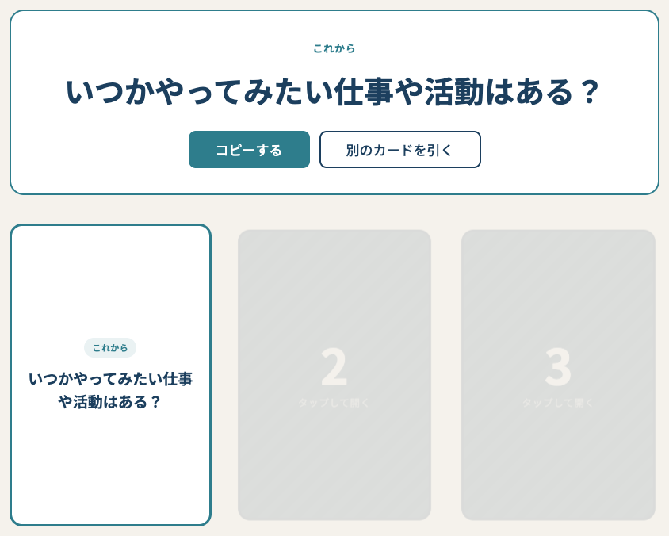
おとなトークカード
大人どうしの雑談を、横で聞く
大人どうしが質問し合う雑談カード。子どもは大人の仕事や歩んできた道を横で聞ける、キャリアにつながる雑談タイムに。
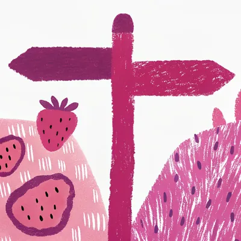
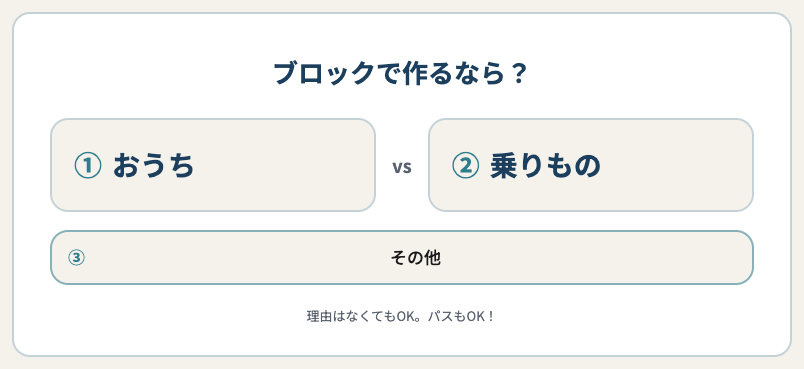
どっちにする？
軽い2択から好きなほうを選ぶ
軽い2択を選ぶアイスブレイクカード。どっちを選んでもOK、「自分で決めていい」感覚を育てる1対1面談向けツール。
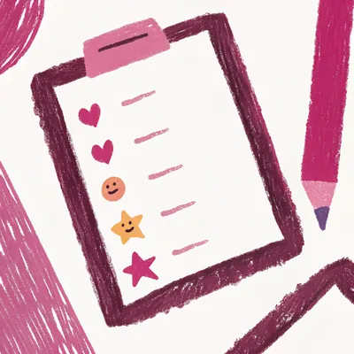
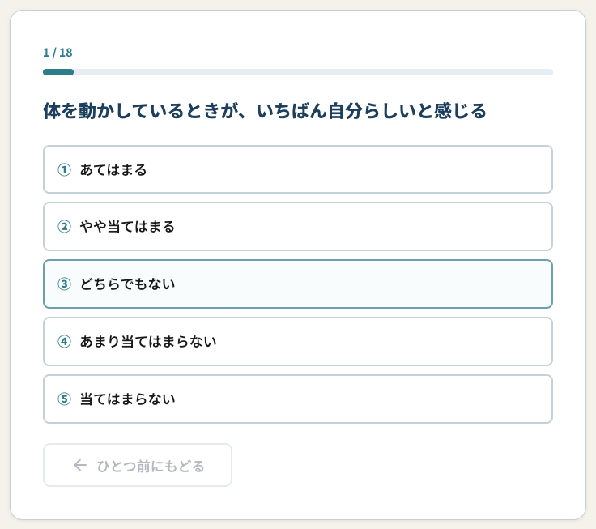
すきタイプチェック
質問に答えて「すき」のタイプを知る
18個の質問に答えると、自分の「すき」のタイプがわかる診断。6つの軸の割合も出るので、作戦会議で会話のタネにできる1対1向けツール。
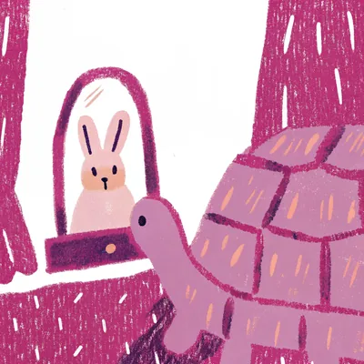
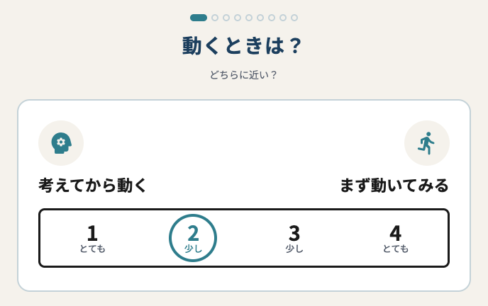
わたし、ぼくってどんな人？
問いに1〜4で答えて、自分をふりかえる
「動くときは？」「予定は？」のような問いに、両はしの言葉のどちらに近いかを1〜4で答えていく1対1面談向けツール。答えたところを1つずつふりかえって話す。
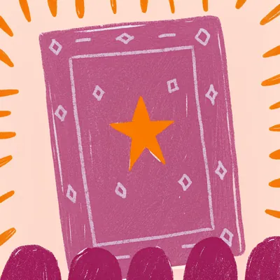
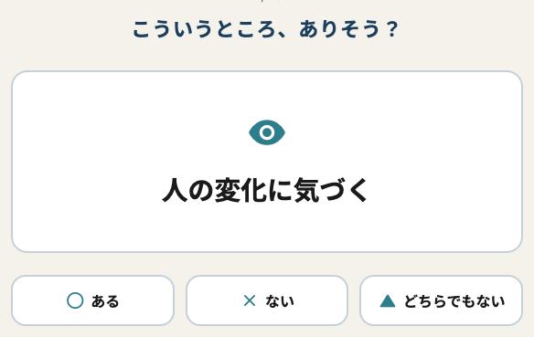
つよみカード
強みカードに「ある」「ない」で答える
「こういうところ、ありそう？」の強みカードに1枚ずつ「ある」「ない」「どちらでもない」で答えていく1対1面談向けツール。「ある」と答えたカードをながめながら話す。
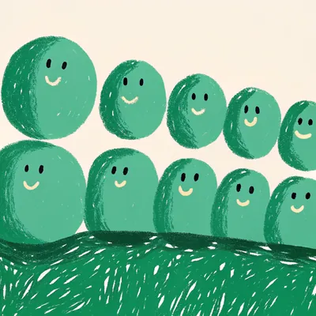
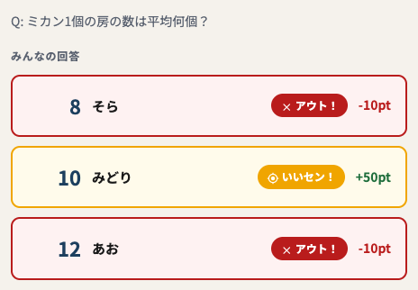
ドまんなか
みんなの数字のまん中をねらう
数字でいいセンをいこう！リアルタイム対戦パーティーゲーム。中央値を当てた人が勝ち。
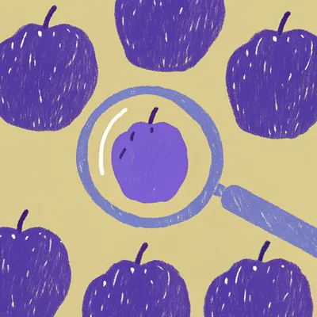
ワードウルフ
ひとりだけ違うお題の人を会話で探す
ひとりだけ違うお題を持つのは誰？会話の中からウルフを見つけ出す正体隠し系ゲーム。
ねむらせ基地
基地で仕事をしながら「ねむらせ屋」を探す
ひみつ基地を歩いて仕事を片づけよう。仲間のふりをした「ねむらせ屋」を、会議の話し合いで見つける。
こっそりワード
雑談にまぎれたお題の言葉を見抜く
2人の雑談にこっそりまぎれた「お題」の言葉はどれ？聞いていたみんなで見抜く会話ゲーム。
人狼ゲーム
村人と人狼で正体をかくし合う
正体を隠して生き残れ。村人と人狼が騙し合う本格リアルタイム対戦ゲーム。全14役職対応。
かくれ怪盗
警備員にまざった怪盗を投票で見ぬく
美術館の警備員の中に、変装した怪盗がまざっている。主任が見回りのメンバーを選び、みんなで投票。宝石を3回守れば警備員チーム、3回すり替えられたら怪盗チームの勝ち。だれも途中でぬけない正体かくし。
名前変えゲーム
こっそり名前を変えた人を当てる
メタバース上で名前を変えた人を当てよう！変えた人は投票されないように隠しきれるか。
え!? 実は○○なんですかゲーム
ある人の意外な一面を推理する
ある人の意外な一面を推理するクイズ。カードをめくって「え!? 本当に！？」を楽しもう。
たとえならべ
数字をたとえで伝えて小さい順に並ぶ
数字をお題に例えてヒントを言い合い、小さい順に宣言するタイミングを競う協力ゲーム。
以心伝心しないゲーム
みんなとかぶらない答えを出す
お題に対してみんなとかぶらない回答をしよう！かぶらなかった人の勝ち。
うそつき辞書
うその意味をまぜて、本物を当てる
めずらしいことばの意味の「？？？」にそれっぽいうそを入れて本物にまぜる。どれが本物か当て合うことばパーティーゲーム。
まぎれ絵師
お題を知らない絵師を絵から探す
お題を知らない「まぎれ絵師」がひとりだけ。1人1筆ずつのおえかきから見つけ出そう。話さなくても遊べる正体かくしゲーム。
お絵描き伝言ゲーム
文を絵に、絵を文にして順に回す
書いた文を次の人が絵に、その絵を次の人が文に。順番に回していくと、最初のお題はどう変わる？ 最後にみんなで見せあう、点数のない伝言ゲーム。
スタンプあてゲーム
形のスタンプの絵からお題を当てる
丸・四角・長方形・三角のスタンプだけで、こっそり配られたお題を表す。当てる人が、どの絵がどのお題かを当てる協力ゲーム。押せる回数は5回から1回まで減っていく。
ピッタリメーター
ヒントからメーターの位置をぴったり当てる
ヒントをたよりに、メーターの位置をぴったり当てる得点ゲーム。ターゲットに近いほど高得点。ヒントは文字入力だから話さなくても出題者になれる。
かくれナンバー
見えない数字の合計を推理する
自分の数字と場の隠しカードが見えない！みんなの発言をヒントに、全部の数字の合計を推理する数字ゲーム。
カギあわせ
仲間のカギの数字を推理して宝箱をあける
数字のカギを小さい順に並べて持つ。見えるのは自分のカギだけ。仲間のカギの数字を推理して、同じ数字どうしをあわせ、宝箱をあける協力ゲーム。
こえだけシアター
声だけの演技から気持ちを当てる
短いセリフを声だけで演技して、どんな気持ちかを当て合うゲーム。演じるのは立候補制、当てる側はボタンで参加。
気持ち当てゲーム
場面カードから主役の気持ちを予想する
場面カードを見て、主役の気持ちがどの系かをみんなで予想する。主役は系とぴったりのことばを先にこっそり選んでおく。点数はなし。ルームに入らない子も、みんなにみせる画面を見てチャットで予想できる。
ピタハメ
ピースを回して型にぴったりはめる
カラフルなピースを回して動かして、グレーの型（かた）にぴったりはめるスピードパズル。ひとりで練習も、みんなで同じ問題に挑戦して完成した順を見ることもできる。
おしつけずかん
宣言つきでカードを押しつけ合う
イヤ〜な生きもののカードを、宣言つきで押しつけ合うブラフゲーム。「ホントかウソか」を当てるか、こっそり見て次の人に回すか。同じ生きもの4枚か全8種類を引き取るとひとり負け。
エサドリ
数字の札を同時に出してエサを取り合う
エサカードをねらって、1〜15の手札から1枚を同時に出す。おなじ数字を出した人どうしはかぶって無効。15ラウンドの合計点で勝負する数字カードゲーム。
ブラックジャック
合計21をめざしてディーラーと勝負
カードを引いて、手札の合計21ちょうどをめざすカードゲーム。21を超えたらバースト。ポイントをかけて、ディーラー（アプリ）との勝負に挑む。ポイントが0になっても自動チャージで最後まで遊べる。
リバーシ
黒と白の石をはさんでひっくり返す
黒と白の石を交互に置いて、はさんだ相手の石をひっくり返す。対戦する2人はそれぞれの端末で置き、ほかの人は勝負を観戦できる。1台の画面でも遊べる。置ける場所を見せる補助や、1手の制限時間もある。
神経衰弱
カードをめくって同じ絵をそろえる
裏になったカードを2枚めくり、同じ絵ならもらえる。CPU と対戦するか、2〜4人が1台の画面で順番に遊ぶ。カードに番号があるので、画面共有でも番号で伝えられる。12枚の「かんたん」から、よく似た絵ばかり40枚の「激ムズ」まで選べる。
そろってゴール
みんなのコマを動かして全員でゴールへ
みんなでコマを1マスずつ動かして、全員がゴールに入るとクリアの協力パズル（2〜12人）。スイッチに乗っている間だけ開くとびら、2人で押す重い箱、カギ、番号の人だけ渡れる橋など、1人では進めないしかけを、声をかけ合ってこえていく。人数が多いと、3人以上で押す箱や、いくつも同時におさえるスイッチも出る。時間は決まっていない。むずかしさは4つで、ステージは番号ごとにちがう形になる。「ひとこと」で、決まった言葉をえらんで知らせられる。自分のまわりだけ見える「くらやみ」と、残り時間の出る「砂時計」も選べる。端末のない人のコマは、ホストが代わりに動かせる。
ちゃりんバトン
小銭の合計を答えて次の人に番を渡す
ならんだ小銭がぜんぶでいくらかを答えて、正解したら次の人にバトンを渡す対決（2〜6人）。自分の番の間だけ自分の時計が減り、0になった人から「ここまで」で、最後まで残った人の勝ち。小銭は2枚からだんだん増える。ひとりでも遊べて（正解した数が点数）、1台の画面でも遊べる。時間なしで数えるだけの「いっしょに数える」もある。

大富豪
強いカードを出して、手札を早くなくす
場より強いカードを出していき、手札を早くなくした人からあがるトランプの定番。それぞれの端末で自分の手札を見て出す。8切り・階段・革命などのルールと考える時間を選べて、人数が足りないときや抜けた人の代わりはCPUが出す。
好きなものビンゴ
好きなもの9つでビンゴカードを作る
テーマにそって好きなものを9個選んでビンゴカードを作り、ホストがひくのを見る運まかせのビンゴ。ひかれたものを選んでいた人の名前が出るので、「同じだ」が見つかる。順位はつけない。ルームに入れない子の分は、ホストがカードを作れる。
みんなでランキング
ランキングを作って1位を予想し合う
ホストがお題を選び、各自でランキングを作る。ほかの人の1位を予想してから、結果を見せ合う。
興味スゴロク
サイコロで止まったマスの「好き」を話す
サイコロを振ってマスに止まり、好きなことややってみたいことを話そう。対話のきっかけづくりに。
塗り絵カレンダー
1週間の過ごし方を色でぬってながめる
1週間の過ごし方を5色で塗って眺めるツール。メンターと一緒に、自分の時間の使い方を見つめ直す対話のきっかけに。
バリューカード
自分の「大事」をカードで見つける
カードを選んで並び替えて、自分の「大事」を見つけるカードワーク。メンターとの対話の材料に。
いくつ言える？
お題に思いつく答えをたくさん書き出す
お題にいくつ答えられるかな？ 制限時間内に思いついた答えを書き出して、みんなの答えを眺めよう。比較なし、発見重視。
キャパグラフ
1週間のがんばり量をグラフで見る
1週間のがんばり量を項目別の負荷で見える化。自分でドラッグして引く「キャパライン」と見比べて、頑張りすぎを客観視するツール。
キャリアすごろく
体験をためて職業を選び、おとなへ
子どものころから、おとなになるまでを、すごろくで進む。体験で「適性」をため、たまった適性に合う職業を選ぶほど、しごとマスのポイントが多い。各自の端末でも、1台の画面をみんなで見ても遊べる。ポイントはゲームの中だけのもの。